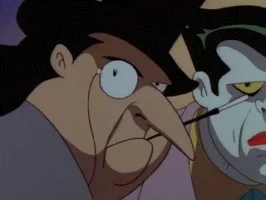

Gotham Post
Saiba tudo sobre a rotina do morcego de Gotham:

Menu Principal
- Crimes
- Prisões
- Principais inimigos
- Novidades
- Fale com o morcego
O que há de novo em Gotham
Atualizado em 18/Fev/2021
Quem é:
Batman é um personagem fictício, um super-herói da banda desenhada americana publicada pela DC Comics.
Foi criado pelo escritor Bill Finger e pelo artista Bob Kane, e apareceu pela primeira vez na revista Detective Comics #27 (Maio de 1939).
Originalmente com o nome "o Bat-Man", o personagem também é conhecido por vários epítetos como "o Cruzado de Capa" (The Caped Crusader),
"o Cavaleiro das Trevas" (The Dark Knight), e "o Maior Detective do Mundo" ( The World's Greatest Detective).
Principais inimigos
- Coringa
- Pinguim
- Darksied
- Espantalho
- Duas Caras
- 
Conheça mais sobre a DC COMICS.
Fale conosco: BatMail